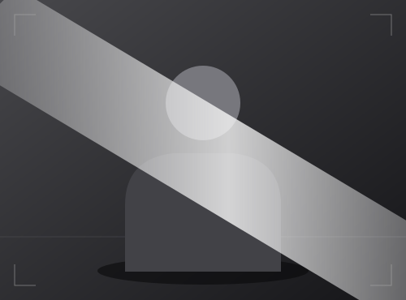

LAB / 01
Relight Lab
Shape illumination with studio presets, flash, light patterns and advanced controls.Atur pencahayaan dengan preset studio, flash, pola cahaya dan kontrol lanjutan.
Professional photo editing inside ChatGPT. Shape light, refine portraits and develop a distinctive visual finish.Editing foto profesional di dalam ChatGPT. Bentuk cahaya, sempurnakan potret dan ciptakan karakter visual.
Public release in preparation · Not yet listed in the Plugin Directory.Rilis publik sedang disiapkan · Belum terdaftar di Plugin Directory.

Shape illumination with studio presets, flash, light patterns and advanced controls.Atur pencahayaan dengan preset studio, flash, pola cahaya dan kontrol lanjutan.
Refine portraits, skin, hair and details with localized edits.Rapikan potret, kulit, rambut dan detail secara terarah.
Clean distractions, replace backdrops and refine backgrounds.Bersihkan gangguan, ganti latar dan rapikan background.
Restore faded or damaged photographs with conservative reconstruction.Pulihkan foto pudar atau rusak dengan rekonstruksi konservatif.
Creative Effects, Color Grading and Reference Matching — three independent workflows.Creative Effects, Color Grading dan Reference Matching — tiga workflow independen.
Edits aim to preserve identity, composition and unrequested details. AI may still change image details. Review outputs before professional delivery.Editing dirancang menjaga identitas, komposisi dan detail yang tidak diminta berubah. AI tetap dapat mengubah detail foto. Periksa hasil sebelum penyerahan profesional.
*No plugin fee is planned. ChatGPT access, plan requirements and usage limits apply. Independently developed; no OpenAI endorsement is implied.*Tidak direncanakan biaya plugin. Akses, paket dan batas penggunaan ChatGPT berlaku. Dikembangkan secara independen, bukan dukungan resmi OpenAI.